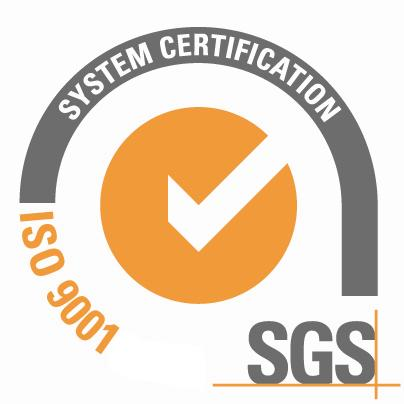
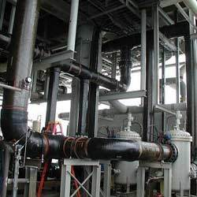

Nuestra historia
Estos son algunos de nuestros principales acontecimientos.
-

1998
Creación de Tk Asme
Tk Asme nace en Giron sobre la via Chimita.
-

2004
Certificación del Sistema de Gestión de Calidad
Logramos la certificación de nuestro sistema integrado de gestión de calidad para la mejora continua de nuestro procesos, productos y servicios.
-

En 2021
En 2021 seremos une empresa con reconocimiento a nivel nacional en la fabricación, reparación, mantenimiento, inspección, medición de espesores.
-
Sea parte
de
nuestra historia!